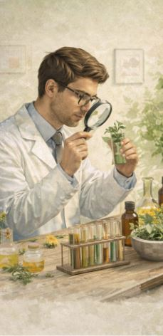
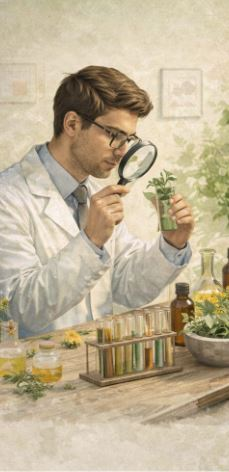

Pse janë të rëndësishme?
Rëndësia e bimëve mjekësore qëndron në faktin se ato përfaqësojnë një burim natyror dhe të rinovueshëm për kujdesin shëndetësor. Ato ofrojnë alternativa natyrale dhe shpesh më pak invazive për trajtimin dhe parandalimin e disa problemeve shëndetësore. Në shumë vende të botës, sidomos në komunitetet rurale, bimët mjekësore vazhdojnë të jenë forma kryesore e trajtimit. Ato janë më të aksesueshme dhe shpesh më ekonomike. Përveç kësaj, përdorimi i tyre është pjesë e trashëgimisë kulturore dhe traditës së shumë popujve. Shkenca moderne i kushton vëmendje të veçantë këtyre bimëve, pasi ato mund të përmbajnë përbërës që ndihmojnë në zhvillimin e barnave të reja. Shumë ilaçe kundër dhimbjeve, infeksioneve apo sëmundjeve të tjera janë zhvilluar duke studiuar përbërësit aktivë të bimëve. Rëndësia e tyre nuk është vetëm mjekësore, por edhe ekologjike dhe ekonomike. Kultivimi i bimëve mjekësore ndihmon në zhvillimin e bujqësisë dhe mbrojtjen e biodiversitetit. Ruajtja e këtyre bimëve është thelbësore për brezat e ardhshëm.